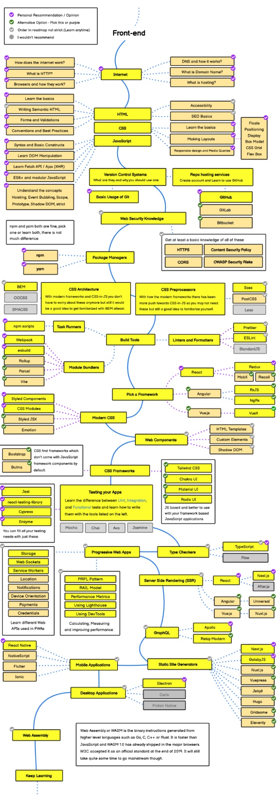
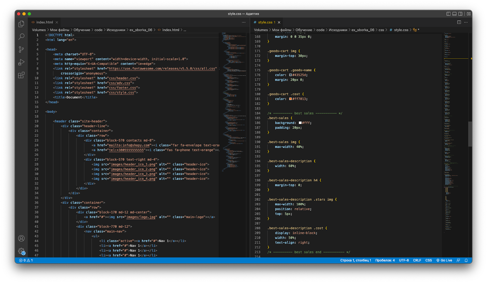
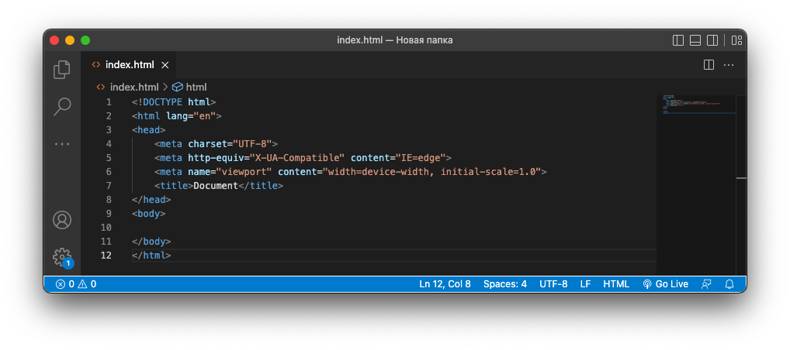

Привіт! Мене звати Діана Смелікова, я операційний директор Wezom Академії. Уже понад 10 років ми допомагаємо студентам освоювати нові диджитал-професії і будувати карʼєру в IT. І можу сказати без вагань: курс HTML5 + CSS3 + JS залишається одним з найбільш популярних серед майбутніх айтішників. Та водночас нерідко зустрічаю сумніви. «Чи варто зараз вивчати HTML?», «Чи будуть отримані знання актуальними через рік, три, пʼять років?», «Що робити з отриманими знаннями та навичками і куди рухатись далі?».
Сьогодні я хочу відповісти на ці та інші питання. І разом з тим дати кілька важливих порад тим, хто тільки планує вивчати HTML. Отже, почнемо!
Для початку пропоную коротко «пробігтися» по термінології.
Якщо для вас це нові терміни, раджу ознайомитися з ними детальніше самостійно — в мережі інформації більш ніж достатньо. Я ж хочу сконцентруватися на більш практичних речах замість теорії.
❓ Отже, кому слід вивчати HTML і CSS (і бажано JS хоча б на базовому рівні)?
Спираючись на власний досвід, я можу виділити дві категорії людей, котрим варто вивчати верстку:
Власне, це основна категорія тих, хто вивчає HTML і CSS. Впевнена, ви зустрічали в інтернеті фразу на кшталт «Frontend — найпростіший спосіб увійти в IT». Це дійсно так, і більшість майбутніх веброзробників починає саме з фронтенду. Тут важливо зробити уточнення, що фронтенд — це не тільки HTML і CSS. Але навіть цього достатньо, щоб зверстати повноцінний сайт.
Не така широка категорія, та все ж таки. Власникам бізнесу та блогерам базові знання верстки допомагають створювати та модернізувати власні сайти, працювати з популярними CMS і економити на послугах веброзробників. Та й взагалі дуже добре, якщо ви можете без залучення спеціаліста «відредагуватии» верстку, змінити ціни на сайті, завантажити нові фото в картки товарів тощо.
Однією з головних проблем айтішників-початківців залишається відсутність чіткого розуміння, що вивчати і куди рухатися далі. Наприклад, студент освоїв на достатньому рівні HTML і CSS. Що далі? JavaScript. А далі? І так можна продовжувати нескінченно.
Далі я покажу орієнтовну схему розвитку сучасного frontend-розробника. А доки ви не втратили свідомість від кількості блоків і невідомих поки що назв, додам, що після схеми я дам рекомендації, як навчатися на ранніх етапах, на чому концентруватися і як не вигоріти через велику кількість нової інформації.
Отже, roadmap майбутнього frontend-розробника. Три... Два... Один!
Так, а тепер видихнули, зберегли собі цей план дій на майбутнє і рухаємось далі!
Отже, якщо зараз ви на самому початку шляху frontend-розробки, особисто я раджу діяти наступним чином:
За моїми спостереженнями, багатьом студентам важко зробити крок від написання «шматків» коду до верстки повноцінної сторінки. Тут як з іноземною мовою — ви, здається, непогано нею оволоділи, формулюєте свої думки в речення без особливих проблем. Але коли справа доходить до розмови з носієм мови, здається, що ви взагалі нічого не знаєте і не можете. Та насправді знаєте і можете!
Візьміть нескладний макет і верстайте його в процесі навчання. Так, десь буде складно і повільно, деякі блоки доведеться пропустити, щоб повернутися до них пізніше. Але ви впораєтесь. Практика, практика і ще раз практика! Тільки так можна вивчити HTML і CSS. Повірте, в IT одна година практичних завдань варта більше, аніж 3-5 годин теорії. Власне, саме тому ми на курсах верстки робимо основний акцент саме на практичних заняттях, а теорію здебільшого залишаємо на самоопрацювання.
Скажу вам відверто. Іноді мені здається, що верстка — найбільш «міфікований» напрямок навчання в IT. Яких тільки міфів не вигадають ті, хто з тієї чи іншої причини не опанував HTML та CSS чи навіть не спробував навчатися. Ось лише деякі з прикладів:
Повторю: це все міфи! У верстці та веброзробці нерідко логічне мислення виявляється важливішим за математичні знання, а «гуманітарії» стають крутими айтішниками. Для роботи з HTML та CSS-кодом підійде навіть слабкий компʼютер, а попит на «джунів», особливо на фрілансі, набагато більший, ніж більшість вважає.
Вивчення основ верстки не потребує від вас ані якихось специфічних знань та навичок, ані особливого технічного оснащення. Насправді більшість студентів на певному етапі навчання дивується, що все простіше, ніж здавалося спочатку. І що процес написання HTML та CSS-коду на практиці не такий складний, коли ти починаєш його писати, а не просто вивчати теорію.
Давайте я покажу на прикладі, щоб переконати вас у цьому!
Як ви вважаєте, скільки часу потрібно, щоб написати такий код?
Пʼять хвилин? Три? Одна? Менше секунди! Достатньо набрати на клавіатурі всього один знак — «!» і натиснути Tab. Далі редактор, а точніше плагін Emmet, все зробить сам. І таких прикладів безліч. Верстка — це не так складно і повільно, як більшість думає.
Щоб почати вивчати HTML та CSS, від вас потрібне лише бажання, час та компʼютер чи ноутбук. Більше того, існують навіть додатки-тренажери для смартфонів. Повноцінно писати код на смартфоні буде складно, але тренуватися у вільний час — можна. Чому б ні?
Починайте з HTML та CSS. І вивчайте їх паралельно, адже вони по суті взаємозалежні та взаємодоповнюючі. А от занурюватися на перших порах в JavaScript, фреймворки Vue.js чи Angular, систему контроля версій Git все ж не варто. Сконцентруйтесь на основах, попрактикуйтесь, а вже потім переходьте до більш складних тем.
Тут важливо зрозуміти одну річ: HTML і CSS — це ще не фронтенд, а лише його частина, мінімальний базис. Вивчити основні теги HTML та стилі CSS при бажанні і достатній кількості часу можна за кілька тижнів. Але необхідно також навчитися правильно їх використовувати, зрозуміти логіку та звʼязки. Не раджу намагатися «зазубрити» всі теги та атрибути. По-перше, це фізично неможливо. А по-друге, в цьому немає сенсу. Ви завжди зможете знайти потрібну інформацію в інтернеті. А в процесі використання тих чи інших інструментів, вивчите їх підсвідомо. Не перевантажуйте мозок зайвою інформацією, інакше швидко вигорите.
Насправді не так важливо, який саме редактор ви оберете. Та раджу придивитися до найбільш популярних програм: Visual Studio Code, Notepad++, Sublime Text чи Vim. Для них досить багато мануалів та іншої інформації в інтернеті, тому ви без проблем знайдете потрібну інформацію чи пораду більш досвідчених колег. Єдине, що зауважу: обирайте редактори з підтримкою Emmet — спеціального синтаксису скорочень, з допомогою якого код можна писати значно швидше.
Якщо ми говоримо саме про впевненого «джуна», то навчання займає в середньому 6 місяців. Але мова йде не тільки про HTML та CSS, а ще й про JavaScript, популярні фреймворки, Git і т. д. Якщо ж говорити виключно про HTML, то навчитися створювати структуру сторінки, додавати блоки з текстом, заголовками, зображеннями, відео та формами при бажанні можна буквально за 1-2 вечори.
Так, можна — в інтернеті більш ніж достатньо інформації. Ми завжди радимо своїм студентам присвячувати якомога більше часу самостійному вивченню матеріалів. І практика показує, що краще та швидше навчаються ті, хто ще до початку курсів самостійно вивчив базові теги та стилі. Це не складно і допомагає легше перейти до більш комплексних тем. Крім того, маю сказати, що навчання в IT — це не тільки вивчення матеріалів, котрі вам дають на курсах, а й уміння знаходити інформацію самостійно. Самоорганізація дуже допоможе в майбутній роботі. Найбільша різниця між самостійним вивченням та навчанням на курсах — в швидкості навчання та структуризації знань.
Завершити я хочу однією важливою думкою. Щороку в Google залишають один і той же запит: «Чи варто вивчати HTML, CSS і JavaScript в 2020/2021/2022 році?». Гарантую, такі ж запити будуть і через рік, і через пʼять років. Але відповідь не зміниться — «Так, варто!».
HTML + CSS + JS — це кістяк веброзробки, з якого починають свій професійний шлях майже всі сучасні айтішники. І, як би банально це не звучало, саме HTML та CSS — той самий вхідний квиток в IT, котрий всі так активно шукають. Якщо ви вирішили спробувати свої сили в IT, готові вивчати щось нове і освоювати нову професію, почніть саме з HTML та CSS.
І не так важливо, будете ви навчатися самостійно, пройдете кількамісячні курси чи будете вчитися в IT-академії в своєму місті протягом року або навіть більше. Головне — ваша готовність, тяга до нових знань і бажання повністю змінити сферу діяльності. Все решта — лиш умовності.
Бажаю вам успіхів у навчанні та роботі. І ласкаво просимо в IT!
НАВЕРХ